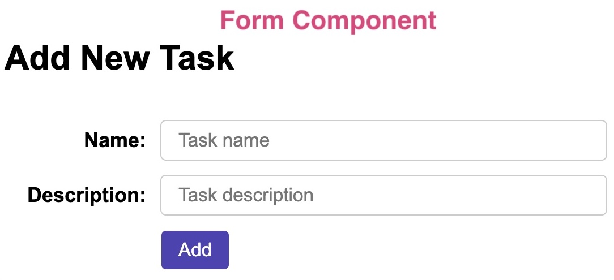
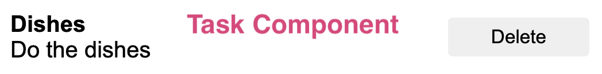
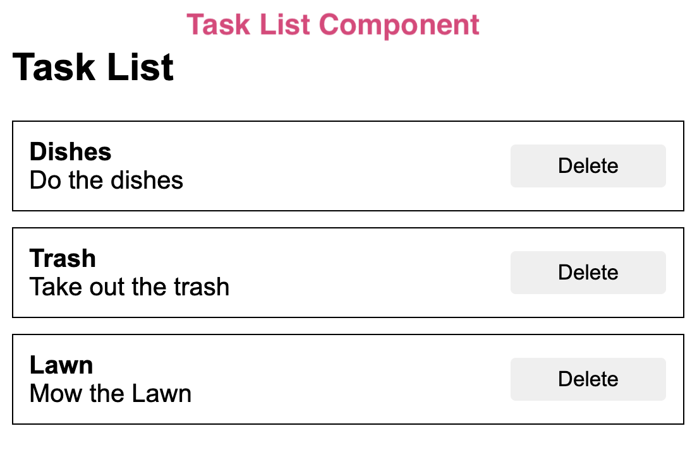
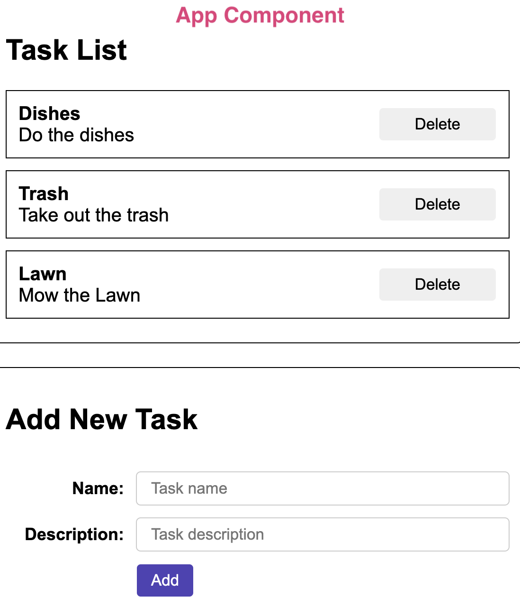
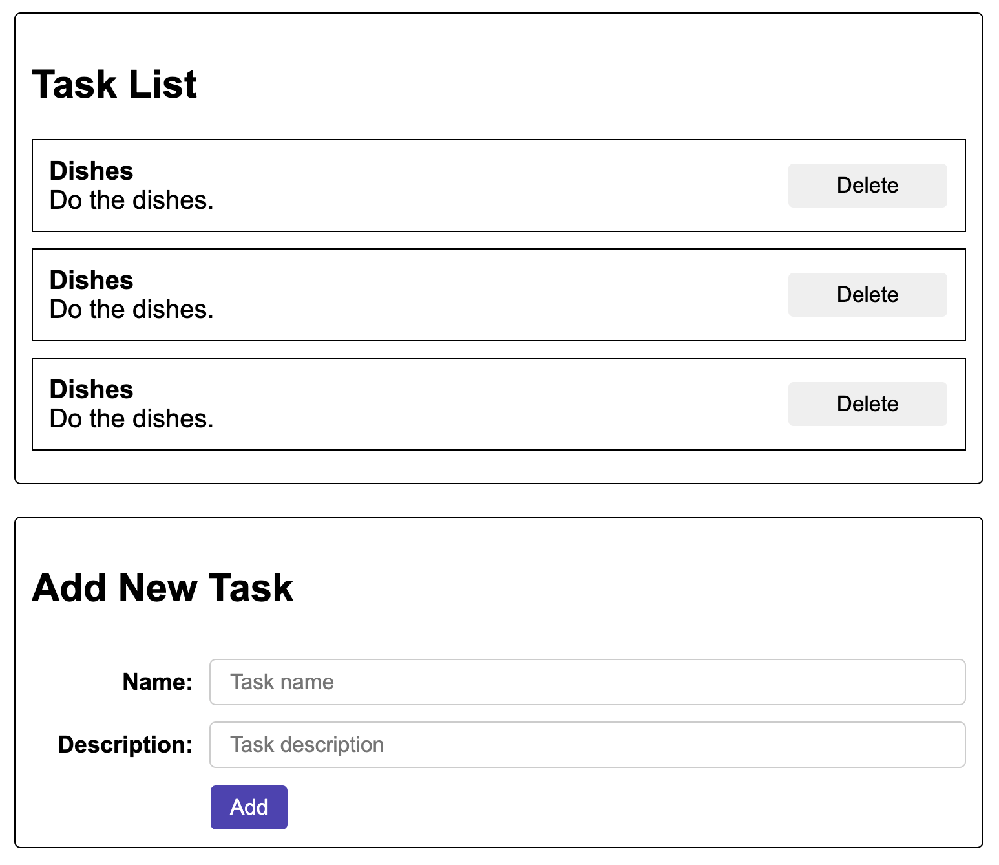
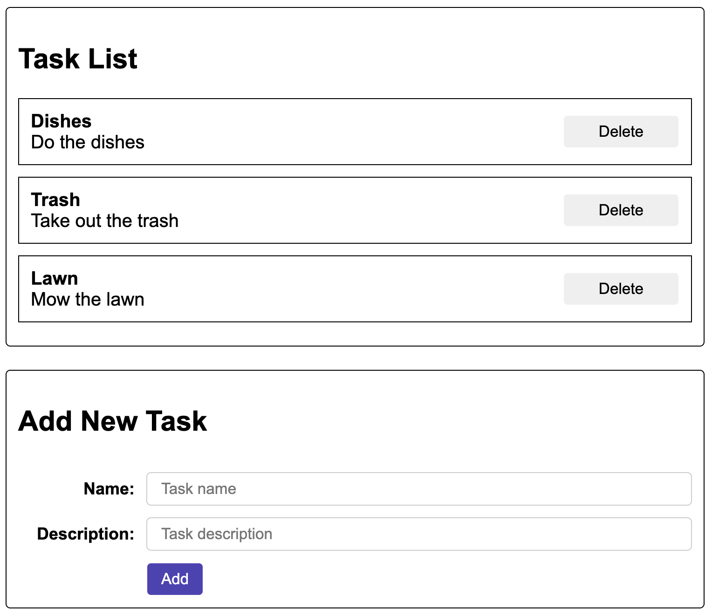
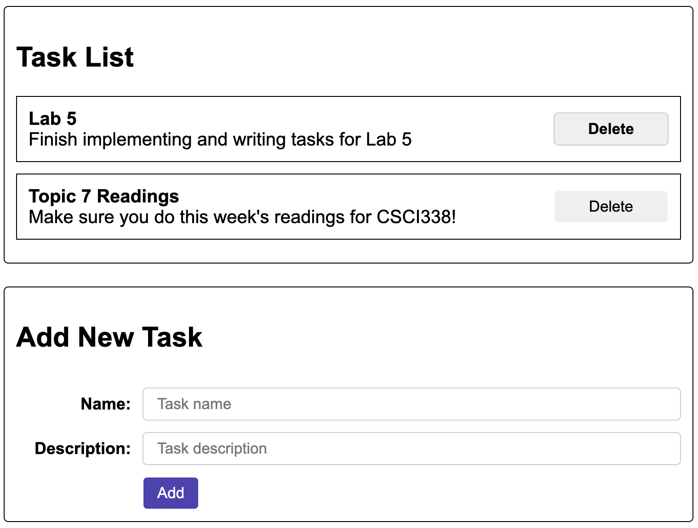

Assignments > Lab 7: Build a "Vanilla" Web Client
Due on Sun, 11/10 @ 11:59PM. 6 Points.
In Lab 6, you built a client-side web app using “Vanilla JavaScript.” In this lab, you will be building the same client using React.
1. Background Readings and Resources
Some useful React readings:
- NextJS overview of client-side technologies. Please read the following sections:
- About Next.js
- From JavaScript to React
- From React to Next.js
- How Next.js works
- Quick Start
- Thinking in React. Make note of the steps:
- Break the UI into a component hierarchy
- Build a static version in React
- Find the minimal but complete representation of UI state (noting the difference between “props” and “state”
- Identify where your state should live
- Adding “inverse data flow”
- Sharing state between components
- Tic Tac Toe
- You are strongly encouraged to do this on your own (see Tic Tac Toe)
Other References (As Needed)
Slides & Video Recordings
- React Slides from Class + Lecture Recording (10/24/2023)
2. Set-up
Tips before you begin
In this version of the task list app, you are using React and Parcel. React is a client-side framework that will ultimately need to be transpiled to HTML, CSS, and JavaScript. Parcel is a tool that helps you transpile / bundle your code everytime you save. Given this:
- We recommend that you disable VS Code’s Auto Save feature for this lab, because you don’t want to activate your bundler on every keystroke (which may be invalid JavaScript…which could trigger transpiler errors that aren’t really errors).
- Conversely, if you think the transpiler is confused and you want to trigger the build process again, just add a blank line to your code and save (all saves trigger the build process).
2.1. Create a lab07-your-username branch
After completing Lab 6, you will create a new branch from your existing lab06-your-username branch (from within your class-exercises-fall2024 repository) as follows:
git status # make sure you've committed all of your files
git branch # verify that you're on the lab06-your-username branch
git checkout -b lab07-your-username # should create a new branch based on your lab05 branch
git branch # verify that you're on your new branch
When you’re done, please make the following modifications to your code:
2.2. Modify existing files and add some new ones
In order to run your Task app using React, we’re going use two different Docker images – one for Python + Fast API, and one for Node.js + React. To do this, please open VS Code and make the following changes (within your lab07-your-username branch) to your version of lab05:
2.2.1. Dockerfile
Replace the contents of your current Dockerfile (within the lab05 directory) with this:
# Image for Node.js and React:
from node:lts
COPY ./src/ui /ui
WORKDIR /ui
RUN npm run build
# Image for Python / Fast API
from python:3.11
COPY ./src /app
COPY --from=0 /ui/dist /app/ui/dist
WORKDIR /app
RUN pip install poetry
RUN poetry install
Note that there are now two images:
- One for the client that uses Node (Lines 1-5), and
- One for the server that uses Python (Lines 7-13).
2.2.2. compose.yaml
Also in the lab05 directory – on the same level as your Docker file – create a new file called compose.yaml that contains the following:
services:
server:
build:
context: .
ports:
- "8000:8000"
volumes:
- ./src:/app
depends_on:
ui:
condition: service_healthy
entrypoint: poetry run uvicorn server:app --host 0.0.0.0 --reload
ui:
image: node:lts
# user: "${UID}:${GID}"
ports:
- "1234:1234"
volumes:
- ./src/ui:/app
working_dir: /app
healthcheck:
test: "ls dist"
timeout: 90s
interval: 10s
entrypoint: npm run watch
The Docker compose file’s job is to provide instructions regarding how each container should be built from its respective image.
2.2.3. package.json
Inside of src/ui, create a new file called package.json with the following code:
{
"scripts": {
"lint": "html-validate *.html && stylelint ./css/*.css && eslint ./js/*.js",
"build": "npm install && parcel build index.html",
"watch": "npm install && parcel watch index.html --no-hmr",
"format": "prettier -w ./js/*.js"
},
"devDependencies": {
"eslint": "^8.51.0",
"eslint-plugin-react": "^7.33.2",
"html-validate": "^8.6.0",
"parcel": "^2.10.0",
"prettier": "^3.0.3",
"process": "^0.11.10",
"stylelint": "^15.11.0",
"stylelint-config-standard": "^34.0.0"
},
"dependencies": {
"react": "^18.2.0",
"react-dom": "^18.2.0"
}
}
2.2.4. Create an .eslintrc.json file
Inside of src/ui, create a new file called .eslintrc.json with the following code:
{
"settings": {
"react": {
"version": "detect"
}
},
"env": {
"browser": true,
"es2021": true
},
"extends": ["eslint:recommended", "plugin:react/recommended"],
"parserOptions": {
"ecmaVersion": "latest",
"sourceType": "module"
},
"plugins": ["react"],
"rules": {
"react/prop-types": 0,
"no-unused-vars": "off"
}
}
2.2.5. Create a .stylelintrc.json file
Inside of src/ui, create a new file called .stylelintrc.json with the following code:
{
"extends": "stylelint-config-standard",
"rules": {
"declaration-block-no-redundant-longhand-properties": null,
"no-descending-specificity": null,
"color-function-notation": null
}
}
2.2.6. Update the .gitignore file
Since we will now be introducing React, some new folders will get created (node_modules, .parcel-cache, and dist). Because these directories contain code that has been generated by third-party modules, they are typically excluded from version control using the .gitignore file. Therefore, please open your .gitignore file (at the root of your lab05) and add the following lines:
node_modules
.parcel-cache
dist
2.3. Build New Docker Images & Container
You are now ready to build your Docker containers using the Docker compose command, which you will issue from within your lab05 directory (on the command line):
docker compose up
Unlike before, the shell processes runs in the foreground (which is actually a good thing because you can debug!). When the installation and build scripts finish, you should see an output line that says something like:
Uvicorn running on http://0.0.0.0:8000 (Press CTRL+C to quit)
Your server is now ready to be tested. Please verify that your old “vanilla” client is running: http://localhost:8000/index.html
Two Docker Images, Two Containers
Notice that in your Docker Dashboard, there are two images (one for node and one for python) and two containers. Pretty neat! This means that if you need to issue any node commands, hop onto the
task-list-labs-uicontainer. Similarly, if you need to issue any python commands, hop ontotask-list-labs-servercontainer. Reminder of how to get to the shell prompt for each:
docker container ls -a
docker exec -it <container_id> sh
2.4. Setup your app to work with React
Finally, now that your new Docker instance is configured, you’re ready to rewrite your code using react. Please make the following changes:
2.4.1. Server-Side Updates
In server.py, change your mount point to ui/dist (which is the directory where your bundled client-side files will live). This line should be at the very bottom of server.py:
# app.mount("/", StaticFiles(directory="ui", html=True), name="ui")
app.mount("/", StaticFiles(directory="ui/dist", html=True), name="ui")
By changing this path, you’re telling Fast API that all of your client-side files will come from the bundled version of your files created by Parcel (which happens to be ui/dist).
2.4.2. Client-Side File Updates
index.html
Rename your current index.html file (in ui) to index-vanilla.html. Then create a new, blank, index.html file in the same folder. When you’re done, add the following code to index.html:
<!DOCTYPE html>
<html lang="en">
<head>
<meta charset="UTF-8">
<meta name="viewport" content="width=device-width, initial-scale=1.0">
<link rel="stylesheet" href="./css/tasks.css">
<script type="module" src="./js/main.js" defer></script>
<title>React Client</title>
</head>
<body>
<div id="app"></div>
</body>
</html>
main.js
Rename your current main.js file (in ui/js) to main-vanilla.js. You’ll be creating a new React version of main.js in the next section.
2.5. Test your formatter and linter
From the command line on your laptop (or on the UI Docker container), navigate to the src/ui directory and run the linter and formatter:
npm run format # will automatically fix your JavaScript formatting
npm run lint # will check your HTML, CSS, and JavaScript formatting
You are now ready to build your React app.
3. Implement Your React Application
React and other client-side frameworks offer many convenient features including:
- A way to encapsulate smaller snippets of functionality into components
- A set of design patterns that other developers are likely also familiar with (so you can hit the ground running)
- A set of convenience functions for managing common tasks (like DOM Manipulation and managing state)
3.1. Create Component Stubs
For our React version of our “Task Client”, we’re going to break up our functionality into 4 components:
Before we implement all of the server requests and event handlers, let’s first create stubs for each of our components (just the JSX).
3.1.1. Form.js
The Form component’s job is to provide a way to:
- Accept information about a new task from the user
- Create a new task (by issuing a POST request to
/tasks) - Handle bad user input / server errors
- Notify the rest of the application if a new task has been successfully created

Let’s beging by creating a Form.js file inside of the ui/js directory. Paste the code shown below into Form.js, which returns a JSX representation of the form:
import { React, useState } from "react";
export default function Form() {
return (
<form className="add-task" method="post">
<h2>Add New Task</h2>
<label htmlFor="name">Name:</label>
<input
type="text"
placeholder="Task name"
/>
<label htmlFor="description">Description:</label>
<input
type="text"
placeholder="Task description"
/>
<button>Add</button>
</form>
);
}
We’ll handle the communication logic later.
3.1.2. Task.js
The Task component’s job is to:
- Display the details of a task
- Provide a way to delete the task (by issuing a DELETE request to
/tasks/<task_id>) - Notify the rest of the application if a new task has been successfully deleted

Create a Task.js file inside of the ui/js directory. Paste the code shown below into Task.js, which returns a JSX representation of a task with hardcoded data.
import { React } from "react";
export default function Task() {
return (
<div className="item">
<strong>Dishes</strong>
<p>Do the dishes.</p>
<button>Delete</button>
</div>
);
}
We’ll handle the communication logic later.
3.1.3. TaskList.js
The TaskList component’s job is to:
- Display all of the user’s tasks
- When notified of an update, re-display and updated version of the user’s tasks (we haven’t yet decided if this component will be issuing a GET request to
/tasksof if that should happen “higher up” in the component hierarchy).

Create a TaskList.js file inside of the ui/js directory. Paste the code shown below into TaskList.js, which returns a JSX representation of a list of tasks.
import { React } from "react";
import Task from "./Task";
export default function TaskList() {
return (
<div className="task-list">
<Task />
<Task />
<Task />
</div>
);
}
Note that we’ve hardcoded 3 tasks in this component (which will change when we start fetching data from the server). We’ll modify this component later so that it’s data-driven.
3.1.4. App.js
The App component’s job is to:
- Hold all of the other components
- Pass messages between the components (by giving the child components access to its variables and functions)

Create an App.js file inside of the ui/js directory. Paste the code shown below into App.js, which returns a JSX representation of a list of tasks.
import { React, useEffect, useState } from "react";
import Form from "./Form";
import TaskList from "./TaskList";
export default function App() {
return (
<main>
<section>
<h2>Task List</h2>
<TaskList />
</section>
<Form />
</main>
);
}
Note that App imports Form and TaskList. We’ll figure out the communication logic, including who passes which message where.
3.1.5. main.js
Finally, create a main.js file inside of the ui/js directory, which will “kick off” your React application. Then, paste in the following code:
import { React } from "react";
import { createRoot } from "react-dom/client";
import App from "./App";
function main() {
const root = createRoot(document.getElementById("app"));
root.render(<App />);
}
// Invoke the function that kicks off React!
main();
This code reaches into the DOM (which is initialized via index.html), and appends our React app to the DOM element with an id of “app”.
3.1.6. Verify that everything works
After making the changes described above, please run your new react app: http://localhost:8000/index.html. You should see a screen that looks like this:

Note that none of the functionality has been implemented yet.
3.2. Making the Task component data-driven
Our next step is to display our tasks based on data returned from the server. But, before we do this, let’s jazz-up our Task component so that the task name and description aren’t hard-coded. To do this, we’re going to make use of props.
In Task.js, please make the following changes:
- Pass a
nameanddescriptionprops into theTaskcomponent function - Replace the hard coded data with the name and description expressions:
import { React } from "react";
export default function Task({ name, description }) {
return (
<div className="item">
<strong>{name}</strong>
<p>{description}</p>
<button>Delete</button>
</div>
);
}
In TaskList.js, please make the corresponding changes:
import { React } from "react";
import Task from "./Task";
export default function TaskList() {
return (
<div className="task-list">
<Task name="Dishes" description="Do the dishes" />
<Task name="Trash" description="Take out the trash" />
<Task name="Lawn" description="Mow the lawn" />
</div>
);
}
Take a look at http://localhost:8000/index.html. If you did it correctly, your screen should look like this:

Congratulations! Your Task Component can now accept data from its parent.
3.3. Fetching data from the server
Hint: Ensure that you have some predefined tasks in server.py
Before completing this section, you may want to add some dummy tasks to
server.py(if you haven’t already). See Lab 6 for a suggested startertaskdb.
Next, we need to display tasks from the server, so we’ll need to issue a GET request to /tasks. For now, let’s do this in App.js and pass the resulting data to the TaskList component. This may or may not be the “right” choice, but we can always switch things around if we need to.
We’ll fetch data the usual way, but instead of manually updating the DOM (like in Lab 6), we’ll create a state variable to do our work for us. Take a look at the following code snippet:
const [taskData, setTaskData] = useState([]);
async function fetchTasks() {
const response = await fetch("/tasks");
const data = await response.json();
console.log(data); // for debugging
setTaskData(data);
}
- Line 1 creates the state variable and setter, and initializes the state variable to an empty array.
- Line 7 sets the state variable, which will trigger a DOM update
To invoke our fetchTasks function safely, we need to use a useEffect as follows:
useEffect(function () {
// invoke side effects function safely:
fetchTasks();
}, [])
This will ensure that fetchTasks() is only called once (and not every time the component re-renders…which happens every time a state variable is set…which would cause an infinite loop).
- If you’re curious: Move the
fetchTasks()invocation out of the useEffect hook and see what happens (check the console).
Finally, we need to pass the resulting taskData to the TaskList component so that TaskList can generate all of the tasks:
<TaskList taskData={taskData} />
To summarize, your App component should now look like this:
import { React, useEffect, useState } from "react";
import Form from "./Form";
import TaskList from "./TaskList";
export default function App() {
// state variable initialized:
const [taskData, setTaskData] = useState([]);
async function fetchTasks() {
const response = await fetch("/tasks");
const data = await response.json();
console.log(data);
setTaskData(data);
}
useEffect(function () {
// invoke side effects function safely:
fetchTasks();
}, []);
return (
<main>
<section>
<h2>Task List</h2>
<TaskList taskData={taskData} />
</section>
<Form />
</main>
);
}
3.4. Displaying server data in TaskList
Now that you’ve got some data to display and your App component is passing this data to TaskList, we need to modify TaskList so that it displays the task. To do this, we’ll make two changes.
First, we’ll update the TaskList function signature to accept the new taskData prop:
export default function TaskList({ taskData }) {
...
}
Second, we’ll remove the hard-coded tasks and use JavaScript’s built-in map function to loop through each task and generate a list of Task components. The Array.map function takes a list and performs a data transformation on each element of the list. “I’ll give you a list of JSON objects, and you’ll give me back a list of Task components”:
<div className="task-list">
{taskData.map((task, idx) => (
<Task
idx={idx}
key={idx}
name={task.name}
description={task.description}
/>
))}
</div>
One other change to note here: Because a user is allowed to delete any task, we need to keep track of the position (idx) of the task and pass it to the Task component.
Your TaskList.js file should now look like this:
import { React } from "react";
import Task from "./Task";
export default function TaskList({ taskData }) {
console.log("TaskList", taskData);
return (
<div className="task-list">
{taskData.map((task, idx) => (
<Task
idx={idx}
key={idx}
name={task.name}
description={task.description}
/>
))}
</div>
);
}
Take a look at http://localhost:8000/index.html. If you did it correctly, your screen should look something like this (but with your data from server.py):

Congratulations! You should now be viewing tasks that originated from the server.
3.5. Deleting Tasks
Recall that the code from section 3.4. is now passing in a new prop to the Task component – idx. We’re going to use this prop to know which task to delete.
To implement our delete functionality, you’ll first need to update the Task function signature to accept the new idx prop:
export default function Task({ idx, name, description }) {
...
}
Next, you’ll create a deleteTask function that will issue a DELETE request to /tasks/<id> as follows:
async function deleteTask() {
const response = await fetch(`/tasks/${idx}`, {
method: "DELETE",
});
const data = await response.json();
console.log(data);
}
Then, you’ll attach the deleteTask function to the click event of the button:
<button onClick={deleteTask}>Delete</button>
Your Task.js file should now look like this:
import { React } from "react";
export default function Task({ idx, name, description }) {
async function deleteTask() {
const response = await fetch(`/tasks/${idx}`, {
method: "DELETE",
});
const data = await response.json();
console.log(data);
}
return (
<div className="item">
<strong>{name}</strong>
<p>{description}</p>
<button onClick={deleteTask}>Delete</button>
</div>
);
}
Navigate to your browser (with the console open) and try deleting one of your tasks. Then refresh your browser. The task should be gone. However, your screen didn’t redraw! We need to fix this!
3.6. Notifying TaskList that a task has been deleted
We need a way for Task to tell the App to re-fetch the tasks from the server and redraw them. To do this, Task needs access to the fetchTasks function we made in App. But how? The answer is that we need to pass the fetchTasks function definition as a prop! Please make the following changes:
App.js
Pass fetchTasks as a prop to TaskList:
<TaskList taskData={taskData} fetchTasks={fetchTasks} />
TaskList.js
Modify the TaskList signature to include the fetchTasks prop:
export default function TaskList({ taskData, fetchTasks }) {
...
}
Pass fetchTasks as a prop to Task:
<Task
idx={idx}
key={idx}
name={task.name}
description={task.description}
fetchTasks={fetchTasks}
/>
Task.js
Modify the Task signature to include the fetchTasks prop:
export default function Task({ idx, name, description, fetchTasks }) {
...
}
Invoke fetchTasks after the delete happens (which will redraw the screen):
async function deleteTask() {
const response = await fetch(`/tasks/${idx}`, {
method: "DELETE",
});
const data = await response.json();
console.log(data);
fetchTasks(); // new
}
Take a look at http://localhost:8000/index.html and try to delete some tasks. If it worked, the screen should be redrawn to reflect the deleted task.
Pro Tip
To get your tasks to come back, add a blank line to
server.pyand save it (which will trigger the server’s hot reload and restore the original dummy tasks).
3.7. Creating a new task
Last but not least, we’re going to create a way to add a new task to the server by issuing a POST request to /tasks. Open Form.js and make the following modifications (which aren’t exactly intuitive):
import { React, useState } from "react";
export default function Form() {
const [name, setName] = useState("");
const [description, setDescription] = useState("");
async function handleSubmit(ev) {
ev.preventDefault();
const response = await fetch("/tasks", {
method: "POST",
headers: {
"Content-Type": "application/json",
},
body: JSON.stringify({
name: name, // read from state variable
description: description, // read from state variable
}),
});
const data = await response.json();
console.log(data);
}
return (
<form className="add-task" method="post" onSubmit={handleSubmit}>
<h2>Add New Task</h2>
<label htmlFor="name">Name:</label>
<input
type="text"
placeholder="Task name"
value={name}
onChange={(e) => setName(e.target.value)}
/>
<label htmlFor="description">Description:</label>
<input
type="text"
placeholder="Task description"
value={description}
onChange={(e) => setDescription(e.target.value)}
/>
<button>Add</button>
</form>
);
}
Some notes here:
- In the React documentation, they suggest that each form data field should be mapped to its own state variable. Since we have two form inputs, let’s make two state variables (name and description). The state variables are set on lines 4-5, and are updated on lines 32 and 39 via
onChangeevent handlers. That means that every keystroke triggers a state change so that the state variable and the form input control are always in sync. This is weird, but it’s what the docs suggest. - The
handleSubmitfunction gets triggered on the form submit (see line 25). At this point, the form data are posted to the server (POST request to/tasks) and a new task should be created on the server.
Navigate to http://localhost:8000/index.html and try to add a new task. Then refresh your browser. You should see the new task. However, your screen didn’t redraw!
Your Final Job
Your final task is to figure out how to redraw the screen (w/o a browser refresh) when a new task is added. When you’re done, you are done with this lab. Congrats!
4. What to Turn In
Before you submit, ensure that your react version of the lab successfully reads, deletes, and adds tasks; and that the screen redraws to reflect any task data changes. When you’re done, please create a pull request with the fully implemented web client (which should be completed inside of your version of your lab05 folder).